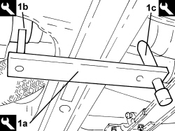
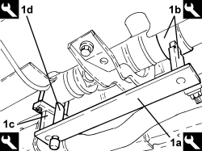
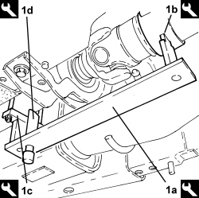
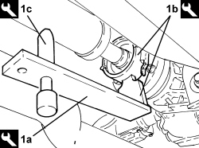

2410D31 ALIGNMENT AND ANGLE ADJUSTMENT FOR DRIVE TRANSMISSION COMPONENTS - CHECK WITH SPECIAL TOOLS
- Path
- Procedures > 24 TRANSMISSION > 2410 PROPELLER SHAFTS > 2410D PROPELLOR SHAFTS BETWEEN ENGINE AND CLUTCH - GEAR BOX UNIT > 2410D31 ALIGNMENT AND ANGLE ADJUSTMENT FOR DRIVE TRANSMISSION COMPONENTS - CHECK WITH SPECIAL TOOLS
- Kind
- repair procedure (removal / refitting; the operation number is the code)
- Applies to
- engines: 3.2 JTS; all production periods
- Interactive page
- https://sloeber94.github.io/elrnDB-aBrrSpdr/en/#/946002088
Applies to: engines: 3.2 JTS; all production periods
Applies to: engines: 3.2 JTS; all production periods
CHECK ALIGNMENT BETWEEN THE PTU AND THE FRONT SECTION "A"
1. Fit the tool prepared previously with the following components as illustrated: the "base" (1a) marked with the letters "A/D"; the "collar" (1b) marked with the letter "A" and the "calibrated pin" (1c) marked with the letter "A".
Tool | Description | Function | Validity |
|---|---|---|---|
2000011700 | Propeller shaft alignment kit | Propeller shaft alignment angles check | 3.2 JTS |
- Raise the calibrated pin (1c) and check that it comes into contact with the propeller shaft. If this is not the case, proceed with the removing-refitting of the propeller shaft because if the refitting operations has not been carried out correctly the support mountings may be pre-tensiones with the constant velocity joints obviously "outside the permitted angle".

Applies to: engines: 3.2 JTS; all production periods
CHECK THE ALIGNMENT BETWEEN THE FRONT SECTION AND THE CENTRE SECTION "B"
1. Fit the tool prepared previously with the following components as illustrated: the "base" (1a) marked with the letters "B/C"; the "collar" (1b) marked with the letters "B/C"; the "fork" (1c)marked with the letters "B/C" and the "calibrated pin" (1d) marked with the letters "B/C" fitted in the special opening in the base.
Tool | Description | Function | Validity |
|---|---|---|---|
2000011700 | Propeller shaft alignment kit | Propeller shaft alignment angles check | 3.2 JTS |
- Raise the calibrated pin (1d) and check that it comes into contact with the propeller shaft. If this is not the case, restore the angles fitting the special spacers on the bracket by the rear universal joint after having removed the fixing bolts. See the NOTES at the end of the procedure.

Applies to: engines: 3.2 JTS; all production periods
CHECK THE ALIGNMENT BETWEEN THE CENTRE SECTION AND THE REAR SECTION "C"
1. Fit the tool prepared previously with the following components as illustrated: the "base" (1a) marked with the letters "B/C"; the "collar" (1b) marked with the letters "B/C"; the "fork" (1c)marked with the letters "B/C" and the "calibrated pin" (1d) marked with the letters "B/C" fitted in the special opening in the base.
Tool | Description | Function | Validity |
|---|---|---|---|
2000011700 | Propeller shaft alignment kit | Propeller shaft alignment angles check | 3.2 JTS |
- Raise the calibrated pin (1d) and check that it comes into contact with the propeller shaft. If this is not the case, restore the angles fitting the special spacers on the bracket by the front universal joint after having removed the fixing bolts. See the NOTES at the end of the procedure.

Applies to: engines: 3.2 JTS; all production periods
CHECK THE ALIGNMENT BETWEEN THE REAR SECTION AND THE RDA "D"
1. Fit the tool prepared previously with the following components as illustrated: the "base" (1a) marked with the letters "A/D"; the "collar" (1b) marked with the letter "DA" and the "calibrated pin" (1c) marked with the letter "D" fitted in the special opening in the base marked with the letter "D".
Tool | Description | Function | Validity |
|---|---|---|---|
2000011700 | Propeller shaft alignment kit | Propeller shaft alignment angles check | 3.2 JTS |
- Raise the calibrated pin (1c) and check that it comes into contact with the propeller shaft. If this is not the case, proceed with the removing-refitting of the propeller shaft because if the refitting operations has not been carried out correctly the support mountings may be pre-tensiones with the constant velocity joints obviously "outside the permitted angle".

Applies to: engines: 3.2 JTS; all production periods